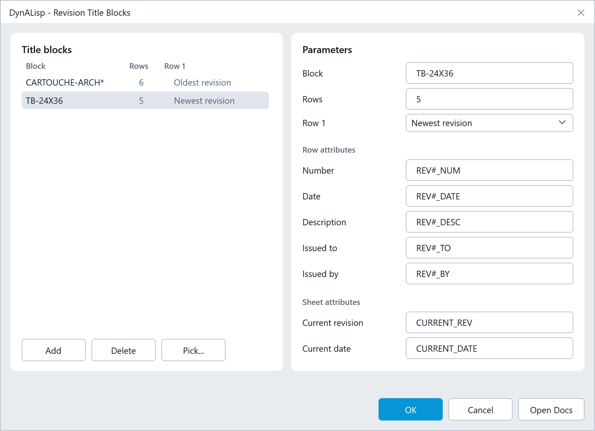

Révisions (Revisions)
| Syntaxe | Dyl-Revisions, REVS, RCLOUD, REVUP, REVTB |
| Requis | AutoCAD 2025 ou plus récent pour Windows, un projet du Navigateur de projets (AutoCAD Architecture) |
| Licence | Licence publique générale GNU v3 |
Description
Gérez les révisions d'un projet en un seul endroit, comme le fait Revit : une liste de révisions pour tout le projet, chacune avec sa date, sa description, et à qui et par qui elle a été émise. Donnez une révision à une feuille, ou dessinez-y un nuage de révision, et les rangées de révisions de son cartouche se remplissent d'elles-mêmes, numérotées par projet ou par feuille. Les dessins fermés sont mis à jour sans être ouverts.
Le projet est le projet du Navigateur de projets du dessin; ses feuilles sont les dessins de son dossier des feuilles, chaque présentation une feuille.

Utilisation
- Une fois par cartouche – ouvrez une feuille et tapez REVTB. Cliquez Pick... et sélectionnez le cartouche : ses rangées de révisions et ses attributs sont devinés d'après leurs étiquettes. Vérifiez-les, puis OK. Cela sert à chaque projet.
- Ajoutez une révision – tapez REVS, cliquez New et tapez sa description. Sélectionnez les feuilles qui l'ont et cliquez Add Revision.
- Cliquez OK : les révisions sont enregistrées dans le projet, et les cartouches des feuilles qu'elles changent sont remplis.
- Montrez un changement sur une feuille – tapez RCLOUD dans sa présentation et dessinez le nuage : il donne sa révision à la feuille.
- Une fois envoyée – cochez Issued : la révision est verrouillée, et son numéro ne change plus jamais.
Commandes
| Commande | Nom | Description |
|---|---|---|
| Dyl-Revisions | Revisions | Ouvre les révisions du projet, comme dans Revit : leur numérotation, leurs dates et descriptions, et les feuilles qui les ont. |
| RCLOUD | Revision Cloud | Dessine un nuage de révision dans la présentation pour une révision du projet, puis son repère, et met à jour le cartouche. |
| REVUP | Update Revisions | Met à jour les cartouches et les repères de révision de cette feuille avec les révisions de son projet. |
| REVTB | Revision Title Blocks | Ouvre les cartouches qui affichent les révisions, et les attributs de leurs rangées de révisions. |
Fenêtre Revisions
Le projet, son numéro et son dossier sont affichés en haut.
Revisions
- Liste des révisions – les révisions du projet, dans leur séquence : séquence, numéro, date, description et si elle est émise. Plusieurs révisions peuvent être sélectionnées (Ctrl ou Maj) pour les modifier d'un coup. Avec la numérotation par feuille, la colonne des numéros montre comment elles comptent (1... ou A...) : chaque feuille numérote les siennes.
- New – ajoute une révision après la dernière, datée d'aujourd'hui, avec la numérotation de la dernière. Une révision ne reçoit jamais l'identifiant d'une révision supprimée : les nuages d'une révision supprimée ne vont jamais à une nouvelle.
- Delete – supprime les révisions sélectionnées, après une confirmation, et les retire de chaque feuille. Leurs nuages restent dans les dessins, sans révision : effacez-les. Refusé quand une révision émise après elles recevrait un autre numéro.
- Move Up, Move Down – changent la séquence de la révision sélectionnée, et les numéros qui la suivent. Une révision ne passe jamais au-delà d'une révision émise.
Parameters
- Numbering – Numeric (1, 2, 3), Alphabetic (A, B, C... Z, AA) ou None (sans numéro, une révision seulement listée). Chaque numérotation compte à part : les révisions A et B émises pour soumission, puis 1, 2, 3 pour construction. Une numérotation qui donnerait un autre numéro à une révision émise après elle est refusée.
- Date, Description, Issued to, Issued by – ce que montrent les cartouches. Chaque révision demande une description.
- Issued – verrouille la révision une fois envoyée : ses paramètres sont grisés, et ses feuilles, sa place dans la séquence et sa suppression ne peuvent plus changer (la fenêtre dit pourquoi). Décochez-le pour modifier la révision à nouveau. Un nuage ne se dessine que pour une révision non émise.
Project
- Numbering – Per project : une révision a le même numéro sur chaque feuille, sa place parmi les révisions de sa numérotation. Per sheet : chaque feuille numérote les révisions qu'elle a, à partir de la première : la troisième révision du projet est la révision 1 d'une feuille qui n'a aucune des deux premières.
- First number – le premier numéro des révisions numériques : 1 ou 0.
- Title blocks – son bouton ouvrir ouvre la fenêtre Revision Title Blocks, puis cette fenêtre à nouveau. Le nombre de cartouches réglés est affiché à côté.
Sheets
- Liste des feuilles – chaque feuille du projet : son dessin (dans le dossier des feuilles), sa présentation, si elle a la révision affichée (Yes : donnée dans cette fenêtre, Cloud : par un nuage de la présentation), et les numéros de ses révisions tels que son cartouche les montre. Plusieurs feuilles peuvent être sélectionnées. L'en-tête donne le nombre de feuilles qui ont la révision affichée.
- Add Revision – donne les révisions sélectionnées aux feuilles sélectionnées.
- Remove Revision – les retire des feuilles sélectionnées. Une feuille qui a un nuage de la révision la garde : effacez le nuage pour la retirer.
- Update All Sheets – enregistre, puis met à jour chaque feuille du projet, par exemple après un changement de cartouche.
OK enregistre les révisions dans le projet, puis met à jour les feuilles dont le cartouche montre autre chose maintenant (ou chaque feuille qui a une révision, quand les cartouches ont changé). Cancel laisse tout tel quel. La ligne de commande donne ensuite le nombre de feuilles mises à jour et liste celles qui n'ont pu l'être.
Fenêtre Revision Title Blocks
Les cartouches dont les attributs affichent les révisions (REVTB, le bouton ouvrir de Title blocks, ou le bouton ouvrir de Revisions dans Dyl-Settings). C'est un réglage de DynALisp, qui sert à chaque projet : une rangée par cartouche.

- Liste des cartouches – chaque cartouche, son nombre de rangées de révisions et la révision de sa rangée 1. Plusieurs peuvent être sélectionnés pour les modifier ou les supprimer d'un coup.
- Add, Delete – ajoutent un cartouche (une copie de celui affiché, à modifier), suppriment ceux sélectionnés.
- Pick... – sélectionnez un cartouche dans le dessin : son nom, ses rangées de révisions et ses attributs sont devinés d'après leurs étiquettes (en anglais ou en français : DATE, DESC, PAR, BY...) et donnés au cartouche affiché, ou à un nouveau. Vérifiez-les.
- Block – le nom du bloc. Les caractères génériques sont permis (*TITLE*) : une rangée pour chaque format d'un cartouche. Pour un bloc dynamique, son nom de bloc dynamique.
- Rows – le nombre de rangées de révisions du bloc. Quand une feuille a plus de révisions, les plus récentes sont affichées.
- Row 1 – Oldest revision : les rangées se remplissent dans leur séquence à partir de la rangée 1. Newest revision : la rangée 1 a la révision la plus récente, les plus anciennes suivent.
- Row attributes – les étiquettes d'attributs des rangées de révisions, # tenant lieu du numéro de la rangée : REV#_DATE pour REV1_DATE, REV2_DATE... Une pour Number, Date, Description, Issued to et Issued by. Une rangée sans révision est vidée.
- Sheet attributes – Current revision et Current date : un attribut chacun, qui reçoit le numéro et la date de la révision la plus récente de la feuille.
Un attribut laissé vide, ou qu'un cartouche n'a pas, est ignoré. Les cartouches sont enregistrés avec vos autres fichiers DynALisp (voir Dyl-UserFiles).
Nuages de révision
- Allez dans l'espace papier de la présentation de la feuille : un nuage donne sa révision à la présentation où il est dessiné.
- Tapez RCLOUD. Les révisions non émises sont listées avec leur séquence : appuyez sur Entrée pour la plus récente, ou tapez la séquence d'une autre.
- Dessinez le nuage avec les options de REVCLOUD. Il va sur le calque de la clé de calque ANNREV (voir Layer Keys).
- Choisissez la position de son repère, ou appuyez sur Entrée pour aucun. Le repère est un triangle avec le numéro de la révision sur cette feuille (bloc DYL-REVTAG, créé dans le dessin la première fois).
- Le cartouche de la feuille est mis à jour.
Mise à jour des feuilles
- Seules les valeurs qui ont changé sont écrites : une feuille déjà à jour n'est pas modifiée.
- Les feuilles du dessin courant et des autres dessins ouverts dans cet AutoCAD sont mises à jour, pas enregistrées : enregistrez-les. Un dessin ouvert dans cet AutoCAD qui ne peut être changé depuis le dessin courant est listé : lancez REVUP dans ce dessin.
- Les dessins fermés sont mis à jour sans être ouverts, et enregistrés.
- Un dessin ouvert par un autre utilisateur (il a un fichier de verrouillage .dwl) est sauté et listé. Ses révisions sont gardées dans le projet : il les reçoit la prochaine fois qu'il est mis à jour. Un .dwl laissé par un plantage arrête aussi la mise à jour : supprimez-le une fois que personne n'a le dessin ouvert.
- Revisions dans Dyl-Settings (Overrides) : chaque feuille d'un projet est mise à jour à son ouverture, et les dessins sautés rattrapent ainsi leur retard. Son bouton ouvrir ouvre la fenêtre Revision Title Blocks.
Limites connues
- Un nuage ne compte que dans la présentation où il est dessiné, en espace papier : un nuage dans l'espace objet, vu par une fenêtre, ne donne pas sa révision à la feuille.
- Un dessin fermé mis à jour ne déplace pas un attribut qui n'est pas justifié à gauche vers son nouveau texte. La feuille est marquée, et ses attributs sont réglés à nouveau la prochaine fois qu'elle est mise à jour ouverte (avec Revisions activé dans Dyl-Settings, dès son ouverture).
- Un dessin fermé mis à jour est enregistré au format de cet AutoCAD, et peut perdre son image d'aperçu jusqu'à ce qu'il soit enregistré à nouveau dans AutoCAD.
- Le cartouche doit être un bloc avec attributs dans la présentation. Un cartouche dans une xréf, ou rempli par des champs de jeu de feuilles, n'est pas modifié.
Noms des commandes et alias
Les noms courts sont des alias de la commande : modifiez-les dans Dyl-Suite. Les rangées marquées ↳ sont ses variantes, lancées par leur nom court.
| Commande | Alias | Nom |
|---|---|---|
| Dyl-Revisions | REVS | Revisions |
| ↳ Pst-RevisionCloud | RCLOUD | Revision Cloud |
| ↳ Pst-RevisionsUpdate | REVUP | Update Revisions |
| ↳ Pst-RevisionTitleBlocks | REVTB | Revision Title Blocks |